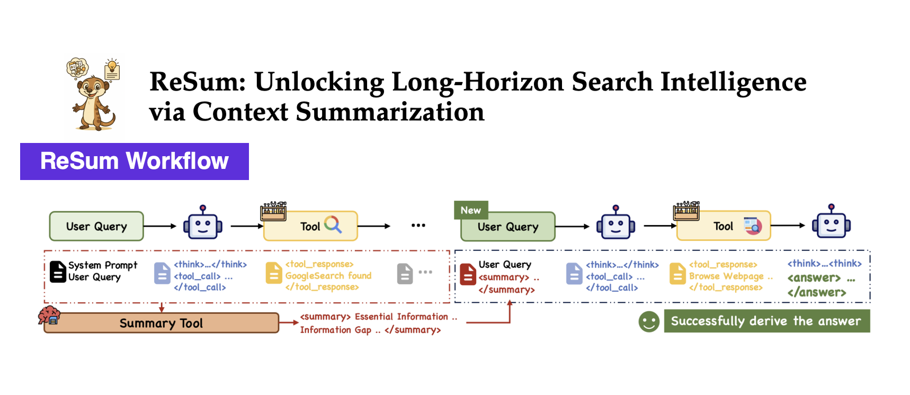
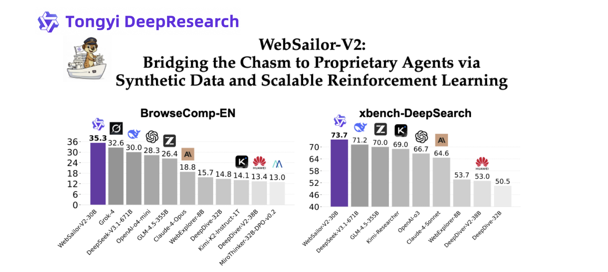
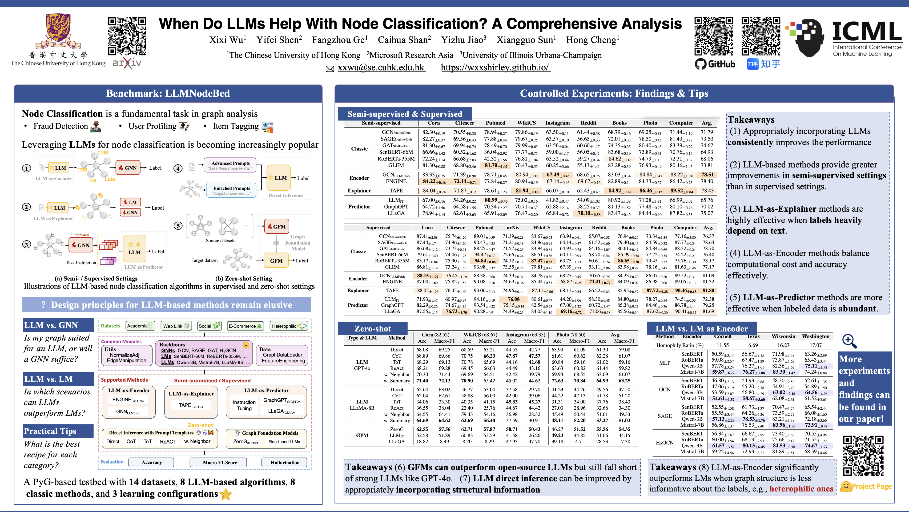
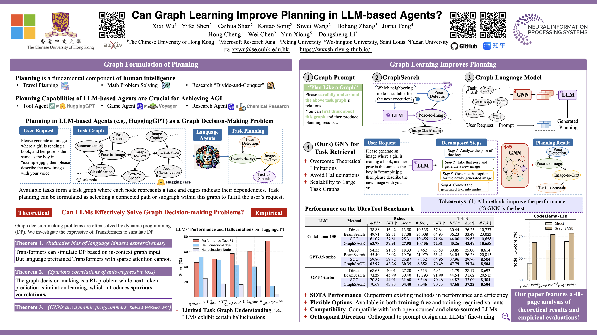
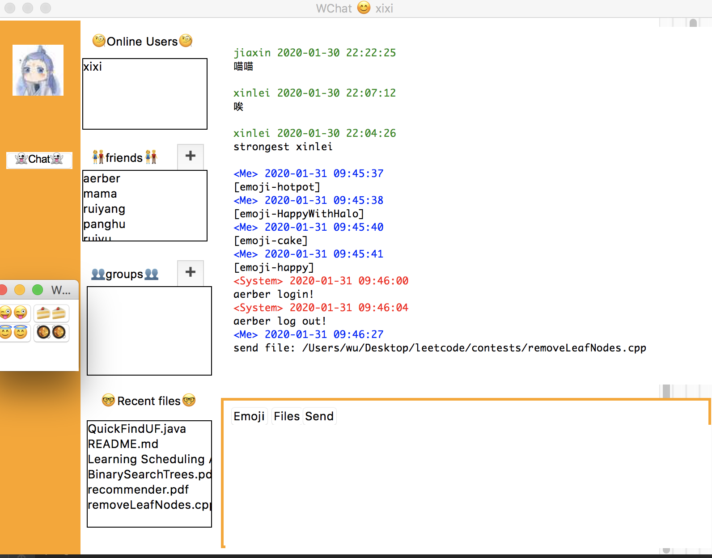

Ph.D. Student,
The Chinese University of Hong Kong
CV / Email / GitHub / Google Scholar
Short Bio
I am a Ph.D. student at The Chinese University of Hong Kong, under the supervision of Prof. Hong CHENG.
Previously, I received my B.S. and M.S. in Computer Science from Fudan University in 2021 and 2024, respectively, under the supervision of Prof. Yun XIONG.
My research lies in enhancing the long-horizon planning, reasoning, and tool-use capabilities for language agents. I was a Research Intern at Tongyi DeepResearch Team , where I contributed to the development of Tongyi-DeepResearch-30B-A3B. Prior to my works on LLMs, I conducted research on Graph Learning.
Open to Summer 2026 research internships in the US. Please contact me if you have such opportunities!
Recent News
- [Oct 2025] Released official technical report for Tongyi-DeepResearch 👏
- [Sep 2025] Tongyi-DeepResearch-30B-A3B achieves SOTA performance across open-source and proprietary agents on multiple benchmarks, accompanied by papers detailing the methods behind these achievements, ReSum, a minimal extension to the ReAct paradigm that enables long-horizon search intelligence, and WebSailor-V2, a scalable data synthesis and RL training pipeline.
- [Aug 2025] Our paper MoLoRAG was accepted to EMNLP'2025. See you in Suzhou ✨
- [July 2025] Released WebSailor, achieving open-source SOTA performance on challenging web browsing benchmarks. WebSailor topped the HuggingFace daily papers 🥇
- [May 2025] Our paper LLMNodeBed was accepted to ICML'2025. See you in Vancouver again 😄
- [Nov 2024] I was awarded NeurIPS'2024 Top Reviewer 🥳
- [Sep 2024] Our paper GNN4TaskPlan was accepted to NeurIPS'2024. See you in Vancouver!
Research Highlights
-

ReSum: Unbounded Inference Paradigm for Web Agents
We introduce ReSum, a novel paradigm that enables indefinite exploration through periodic context summarization. ReSum minimizes modifications to ReAct to avoid additional architectural complexity, ensuring plug-and-play compatibility with existing agents. We further design ReSum-GRPO to familiarize agents with this paradigm. Experiments across web agents on three challenging benchmarks show average improvements of 4.5% for ReSum compared to ReAct, with further improvements of 8.2% after ReSum-GRPO training.
-

WebSailor: Systematic Post-training Recipe for Web Agents
WebSailor presents a comprehensive open-source framework for post-training web agents, encompassing data synthesis, supervised fine-tuning, and reinforcement learning components. Built on the Qwen3-30B-A3B model, WebSailor-V2 achieves SOTA performance, scoring 35.3% on BrowseComp-en, 44.1% on BrowseComp-zh, and 30.6% on Humanity's Last Exam (HLE).
-

Benchmark of LLM4Graph Algorithms (ICML'2025)
We introduce LLMNodeBed, a PyG-based testbed for LLM-based node classification algorithms. It integrates 14 datasets, supports 8 LLM-based and 8 classic methods, and covers 3 learning configurations. With LLMNodeBed, we train and evaluate over 2,700 models to analyze the effects of factors like LLM type and size, prompt, learning paradigm, and dataset homophily. Our study reveals 8 key insights, including (1) optimal settings for each algorithm category, and (2) scenarios where LLMs significantly outperform LMs.
-

Graph Learning for Task Planning (NeurIPS'2024)
In language agents, available tasks naturally form a task graph, where nodes represent tasks and edges denote dependencies. Under such context, task planning involves selecting a path within this graph to fulfill user requests. We find that the bottleneck in LLMs' planning abilities lies in their limited understanding of the task graph. Therefore, we introduce GNNs as a simple fix, available in both training-free and training-required variants. Extensive experiments demonstrate that GNN-based methods surpass existing solutions even without training.


Selected Publications
-
Tongyi DeepResearch Technical Report
Xixi Wu is a co-author, contributed to the development of RL infrastructure for Tongyi-DeepResearch models.
Technical Report, 2025
-
ReSum: Unlocking Long-Horizon Search Intelligence via Context Summarization
Xixi Wu*, Kuan Li*, Yida Zhao, Liwen Zhang, Litu Ou, Huifeng Yin, Zhongwang Zhang, Xinmiao Yu, Dingchu Zhang, Yong Jiang, Pengjun Xie, Fei Huang, Minhao Cheng, Shuai Wang, Hong Cheng, and Jingren Zhou
arXiv preprint, 2025
-
MoLoRAG: Bootstrapping Document Understanding via Multi-modal Logic-aware Retrieval
Xixi Wu, Yanchao Tan, Nan Hou, Ruiyang Zhang, and Hong Cheng
To appear, Proceedings of the Conference on Empirical Methods in Natural Language Processing (EMNLP), 2025
-
When Do LLMs Help With Node Classification? A Comprehensive Analysis
Xixi Wu, Yifei Shen, Fangzhou Ge, Caihua Shan, Yizhu Jiao, Xiangguo Sun, and Hong Cheng
Proceedings of the 42nd International Conference on Machine Learning (ICML), 2025
-
Can Graph Learning Improve Planning in LLM-based Agents?
Xixi Wu*, Yifei Shen*, Caihua Shan, Kaitao Song, Siwei Wang, Bohang Zhang, Jiarui Feng, Hong Cheng, Wei Chen, Yun Xiong, and Dongsheng Li
Proceedings of the 38th Conference on Neural Information Processing Systems (NeurIPS), 2024
-
ProCom: A Few-shot Targeted Community Detection Algorithm
Xixi Wu, Kaiyu Xiong, Yun Xiong, Xiaoxin He, Yao Zhang, Yizhu Jiao, and Jiawei Zhang
Proceedings of the 30th ACM SIGKDD Conference on Knowledge Discovery and Data Mining (KDD), 2024
-
ConsRec: Learning Consensus Behind Interactions for Group Recommendation
Xixi Wu, Yun Xiong, Yao Zhang, Yizhu Jiao, Jiawei Zhang, Yangyong Zhu, and Philip S. Yu
Proceedings of the ACM Web Conference (WWW), 2023
-
CLARE: A Semi-supervised Community Detection Algorithm
Xixi Wu, Yun Xiong, Yao Zhang, Yizhu Jiao, Caihua Shan, Yiheng Sun, Yangyong Zhu, and Philip S. Yu
Proceedings of the 28th ACM SIGKDD Conference on Knowledge Discovery and Data Mining (KDD), 2022
-
DDIPrompt: Drug-Drug Interaction Event Prediction based on Graph Prompt Learning
Yingying Wang, Yun Xiong, Xixi Wu, Xiangguo Sun, Jiawei Zhang, and Guangyong Zheng
Proceedings of the 33rd ACM International Conference on Information and Knowledge Management (CIKM), 2024
-
Towards Adaptive Neighborhood for Advancing Temporal Interaction Graph Modeling
Siwei Zhang, Xi Chen, Yun Xiong, Xixi Wu, Yao Zhang, Yongrui Fu, Yinglong Zhao, and Jiawei Zhang
Proceedings of the 30th ACM SIGKDD Conference on Knowledge Discovery and Data Mining (KDD), 2024
-
Dual Intents Graph Modeling for User-centric Group Discovery
Xixi Wu, Yun Xiong, Yao Zhang, Yizhu Jiao, and Jiawei Zhang
Proceedings of the 32nd ACM International Conference on Information and Knowledge Management (CIKM), 2023


Experience
-
Microsoft Research Asia
Research Intern, Shanghai AI/ML Group Feb. 2024 - Jun. 2024
-
Tongyi Lab, Alibaba Group
Research Intern, DeepResearch Team Jun. 2025 - Oct. 2025
Selected Awards
- Hong Kong PhD Fellowship (HKPFS), Hong Kong SAR 2024
- National Scholarship for Graduate Student, Ministry of Education, China 2022 & 2023
- ACM Web Conference Student Travel Award 2023
- Second Class Scholarship for Outstanding Student, Fudan University 2018 & 2021
- Second Prize of Undergraduate Mathematical Contest in Modeling, Shanghai, China (CUMCM) 2019
- First Prize in National Olympiad in Mathematics in Provinces, Jiangsu, China 2016
Professional Services
- Conference Reviewer: NeurIPS'2024 (Top Reviewer Award🏆) - 2025, ICLR'2025 - 2026, ICML'2025, WWW'2024 Graph Foundation Model (GFM) Workshop, SIGKDD'2024 - 2025, AAAI 2026
- Journal Reviewer: IEEE Transactions on Knowledge and Data Engineering (TKDE), Transactions on Machine Learning Research (TMLR)
Miscellaneous
- I love sports like swimming 🏊 and running 🏃. I also enjoy cooking Chinese food 🤣
- During my undergraduate studies, I was interested in mobile app development (You can find all the source codes on my GitHub):
Lose Weight, a Fluter App

Hulv, a Mini-Program
 Chatroom, a Desktop App
- I enjoy exploring the unknown and strive to keep moving forward on this path of discovery and learning ✨